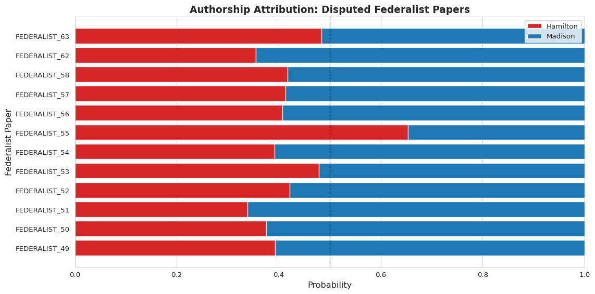

import polars as pl
import numpy as np
import pandas as pd
from sklearn.ensemble import RandomForestClassifier
from sklearn.model_selection import train_test_split
from sklearn.metrics import accuracy_score, confusion_matrix, classification_report
import matplotlib.pyplot as plt
import seaborn as sns
# Set style
sns.set_style("whitegrid")
plt.rcParams['figure.figsize'] = (10, 6)14 Classification & Authorship Attribution
Companion Notebook: Mini Lab 12: Classification & Federalist Papers
In this chapter, we’ll (mostly) replicate a famous classification task first done by Frederick Mosteller and David L. Wallace in the early 1960s (Mosteller and Wallace 1963). They undertook this without the benefit of modern text processing—it was truly pioneering work in computational linguistics and information theory. Keep that in mind as we do in minutes what took them months.
14.1 Introduction to Classification
Classification is a supervised machine learning task where we train a model to predict categorical labels (classes) based on features. In text analysis, common classification tasks include:
- Authorship attribution: Who wrote this text?
- Sentiment analysis: Is this review positive or negative?
- Genre classification: Is this a novel, poem, or essay?
- Topic classification: What subject does this article discuss?
Key concepts:
- Features: Measurable properties (e.g., word frequencies)
- Labels: Categories we want to predict (e.g., author names)
- Training data: Labeled examples used to build the model
- Validation data: Held-out data to test model performance
- Test data: New data where labels are unknown (what we want to predict)
14.2 Mosteller & Wallace’s Variables
Because of computational limits in the 1960s, Mosteller & Wallace needed to identify potentially productive variables ahead of building their model. This is not how we would approach it now, but it was a constraint at the time. They created 3 groups of candidate words.
Their first group contains 70 common function words:
mw_group1 = [
"a", "all", "also", "an", "and", "any", "are", "as", "at", "be",
"been", "but", "by", "can", "do", "down", "even", "every", "for",
"from", "had", "has", "have", "her", "his", "if", "in", "into",
"is", "it", "its", "may", "more", "must", "my", "no", "not",
"now", "of", "on", "one", "only", "or", "our", "shall", "should",
"so", "some", "such", "than", "that", "the", "their", "then",
"there", "things", "this", "to", "up", "upon", "was", "were",
"what", "when", "which", "who", "will", "with", "would", "your"
]Their second group adds 47 more words:
mw_group2 = [
"affect", "again", "although", "among", "another", "because",
"between", "both", "city", "commonly", "consequently",
"considerable", "contribute", "defensive", "destruction", "did",
"direction", "disgracing", "either", "enough", "fortune",
"function", "himself", "innovation", "join", "language", "most",
"nor", "offensive", "often", "pass", "perhaps", "rapid", "same",
"second", "still", "those", "throughout", "under", "vigor",
"violate", "violence", "voice", "where", "whether", "while",
"whilst"
]Their third group includes 48 more content-bearing words (some originally lemmatized):
mw_group3 = [
"about", "according", "adversaries", "after", "aid", "always",
"apt", "asserted", "before", "being", "better", "care", "choice",
"common", "danger", "decide", "decides", "decided", "deciding",
"degree", "during", "expense", "expenses", "extent", "follow",
"follows", "followed", "following", "i", "imagine", "imagined",
"intrust", "intrusted", "intrusting", "kind", "large", "likely",
"matter", "matters", "moreover", "necessary", "necessity",
"necessities", "others", "particularly", "principle",
"probability", "proper", "propriety", "provision", "provisions",
"requisite", "substance", "they", "though", "truth", "truths",
"us", "usage", "usages", "we", "work", "works"
]All together: 165 candidate variables (180 unlemmatized tokens).
# Combine all groups
mw_all = sorted(mw_group1 + mw_group2 + mw_group3)
print(f"Total variables: {len(mw_all)}")Total variables: 18014.3 The Federalist Papers
The Federalist Papers are 85 articles written by Alexander Hamilton, James Madison, and John Jay under the pseudonym “Publius” to promote ratification of the U.S. Constitution.
Authorship breakdown:
- Hamilton: 51 papers
- Madison: 14 papers
- Jay: 5 papers
- Joint (Hamilton & Madison): 3 papers
- Disputed (Hamilton or Madison?): 12 papers
Authorship has been debated since publication. We’ll use the generally accepted attributions for known papers, then predict the disputed ones.
14.3.1 Load the Data
# Load metadata
meta_url = "https://github.com/browndw/humanities_analytics/raw/refs/heads/main/data/data_meta/federalist_meta.csv"
fed_meta = pl.read_csv(meta_url)
print("Authorship breakdown:")
print(fed_meta.group_by('author_id').agg(pl.count()).sort('count', descending=True))Authorship breakdown:
shape: (5, 2)
┌──────────────────┬───────┐
│ author_id ┆ count │
│ --- ┆ --- │
│ str ┆ u32 │
╞══════════════════╪═══════╡
│ Hamilton ┆ 51 │
│ Madison ┆ 14 │
│ Disputed ┆ 12 │
│ Jay ┆ 5 │
│ Hamilton_Madison ┆ 3 │
└──────────────────┴───────┘/tmp/ipykernel_3420/3030490263.py:6: DeprecationWarning: `pl.count()` is deprecated. Please use `pl.len()` instead.
(Deprecated in version 0.20.5)
print(fed_meta.group_by('author_id').agg(pl.count()).sort('count', descending=True))# Load text data
data_url = "https://github.com/browndw/humanities_analytics/raw/refs/heads/main/data/data_tables/federalist_papers.csv"
fed_text = pl.read_csv(data_url)
print(f"Loaded {len(fed_text)} papers")Loaded 85 papers14.4 Data Preparation
We need to convert the raw text into a document-term matrix with word proportions. Why proportions? Paper length shouldn’t bias our model—a long paper will naturally have more occurrences of every word.
# Join metadata with text
fed_data = fed_text.join(fed_meta.select(['doc_id', 'author_id']), on='doc_id', how='left')14.4.1 Create Document-Term Matrix
We’ll tokenize the text and count Mosteller & Wallace’s candidate words, converting counts to proportions:
def create_dtm(text, vocabulary):
"""Create document-term matrix with proportions for given vocabulary"""
tokens = text.lower().split()
total_tokens = len(tokens)
word_counts = {}
for word in vocabulary:
count = tokens.count(word)
word_counts[word] = count / total_tokens if total_tokens > 0 else 0
return word_counts
# Apply to all documents
dtm_data = []
for row in fed_data.iter_rows(named=True):
word_props = create_dtm(row['text'], mw_all)
word_props['doc_id'] = row['doc_id']
word_props['author_id'] = row['author_id']
dtm_data.append(word_props)
# Convert to polars DataFrame
fed_data_prop = pl.DataFrame(dtm_data)
word_cols = [col for col in fed_data_prop.columns if col not in ['doc_id', 'author_id']]
fed_data_prop = fed_data_prop.select(['doc_id', 'author_id'] + word_cols)
print(f"Document-term matrix: {fed_data_prop.shape}")
print("\nFirst few rows (sample):")
print(fed_data_prop.select(['doc_id', 'author_id'] + word_cols[:5]).head())Document-term matrix: (85, 182)
First few rows (sample):
shape: (5, 7)
┌───────────────┬───────────┬──────────┬───────┬───────────┬─────────────┬──────────┐
│ doc_id ┆ author_id ┆ a ┆ about ┆ according ┆ adversaries ┆ affect │
│ --- ┆ --- ┆ --- ┆ --- ┆ --- ┆ --- ┆ --- │
│ str ┆ str ┆ f64 ┆ f64 ┆ f64 ┆ f64 ┆ f64 │
╞═══════════════╪═══════════╪══════════╪═══════╪═══════════╪═════════════╪══════════╡
│ FEDERALIST_01 ┆ Hamilton ┆ 0.01547 ┆ 0.0 ┆ 0.0 ┆ 0.0 ┆ 0.000619 │
│ FEDERALIST_02 ┆ Jay ┆ 0.017344 ┆ 0.0 ┆ 0.0 ┆ 0.0 ┆ 0.0 │
│ FEDERALIST_03 ┆ Jay ┆ 0.008978 ┆ 0.0 ┆ 0.0 ┆ 0.0 ┆ 0.001381 │
│ FEDERALIST_04 ┆ Jay ┆ 0.00978 ┆ 0.0 ┆ 0.0 ┆ 0.0 ┆ 0.001222 │
│ FEDERALIST_05 ┆ Jay ┆ 0.006682 ┆ 0.0 ┆ 0.0 ┆ 0.0 ┆ 0.0 │
└───────────────┴───────────┴──────────┴───────┴───────────┴─────────────┴──────────┘What’s happening here?
- Tokenization: Split text into words (lowercased)
- Count: For each M&W word, count occurrences
- Normalize: Divide by total tokens to get proportion
- Result: Each row is a paper, each column is a word’s proportion
14.5 Train/Test Split
We’ll separate papers into:
- Training: Hamilton and Madison papers (known authors) for building the model
- Test: Disputed papers (what we want to predict)
# Training data: known authors (Hamilton & Madison only)
train_data = fed_data_prop.filter(
(pl.col('author_id') == 'Hamilton') | (pl.col('author_id') == 'Madison')
)
# Test data: disputed papers
test_data = fed_data_prop.filter(pl.col('author_id') == 'Disputed')
print(f"Training data: {len(train_data)} papers")
print(f"Test data: {len(test_data)} papers")Training data: 65 papers
Test data: 12 papers14.6 Random Forest Classification
Why Random Forest?
- Ensemble method: Combines multiple decision trees
- Robust: Handles many features well
- Interpretable: Provides feature importance rankings
- Popular: Widely used in practice
How it works:
- Build many decision trees (100 in our case)
- Each tree votes for a class (Hamilton or Madison)
- Final prediction is the majority vote
Let’s start with just Mosteller & Wallace’s first group (70 words):
# Select Group 1 variables
available_mw1 = [word for word in mw_group1 if word in train_data.columns]
train_g1 = train_data.select(['doc_id', 'author_id'] + available_mw1)
# Convert to numpy for sklearn
X_train_g1 = train_g1.select(available_mw1).to_numpy()
y_train_g1 = train_g1.select('author_id').to_numpy().flatten()
# Split into train/validation (80/20)
# stratify=y_train_g1 maintains class balance (51 Hamilton vs 14 Madison)
X_tr, X_val, y_tr, y_val = train_test_split(
X_train_g1, y_train_g1, test_size=0.2, random_state=123, stratify=y_train_g1
)
print(f"Training set: {len(X_tr)} papers")
print(f"Validation set: {len(X_val)} papers")Training set: 52 papers
Validation set: 13 papers14.6.1 Train the Model
# Random Forest with 100 trees
rf_model = RandomForestClassifier(
n_estimators=100,
random_state=123,
max_depth=10,
min_samples_split=5
)
rf_model.fit(X_tr, y_tr)
print(f"Training accuracy: {rf_model.score(X_tr, y_tr):.2%}")Training accuracy: 100.00%14.6.2 Feature Importance
One advantage of Random Forest: we can see which features (words) matter most:
feature_importance = pd.DataFrame({
'feature': available_mw1,
'importance': rf_model.feature_importances_
}).sort_values('importance', ascending=False)
print("Top 20 most important features:")
print(feature_importance.head(20))Top 20 most important features:
feature importance
59 upon 0.197918
39 on 0.103972
54 there 0.078205
12 by 0.077218
57 to 0.049214
4 and 0.048835
64 which 0.024699
68 would 0.022795
38 of 0.019039
0 a 0.018555
26 in 0.018129
35 no 0.017874
56 this 0.017812
8 at 0.017394
17 every 0.017315
45 should 0.016665
27 into 0.015672
46 so 0.014967
28 is 0.013733
20 had 0.012681Interpretation: Importance measures how much each word reduces classification uncertainty (Gini impurity). Higher values = better at distinguishing Hamilton from Madison. The Random Forest averages importance across all 100 trees.
14.6.3 Validation
Let’s test on the held-out validation set:
y_pred_val = rf_model.predict(X_val)
print(f"Validation accuracy: {accuracy_score(y_val, y_pred_val):.2%}\n")
print("Confusion Matrix:")
print(confusion_matrix(y_val, y_pred_val))
print("\nClassification Report:")
print(classification_report(y_val, y_pred_val))Validation accuracy: 100.00%
Confusion Matrix:
[[10 0]
[ 0 3]]
Classification Report:
precision recall f1-score support
Hamilton 1.00 1.00 1.00 10
Madison 1.00 1.00 1.00 3
accuracy 1.00 13
macro avg 1.00 1.00 1.00 13
weighted avg 1.00 1.00 1.00 13
Reading the confusion matrix:
Predicted
H M
Actual H [10 0]
M [ 0 3]Perfect classification! All Hamiltons correctly identified as Hamilton, all Madisons as Madison.
Classification report metrics:
- Precision: Of papers predicted as author X, what % were actually by X?
- Recall: Of papers truly by author X, what % did we correctly identify?
- F1-score: Harmonic mean balancing precision and recall
- Support: Number of papers by each author in validation set
These metrics matter especially with imbalanced classes (51 Hamilton vs 14 Madison papers).
14.7 Full Model: All M&W Variables
Now let’s use all 180 variables:
# Select all M&W variables
available_mw_all = [word for word in mw_all if word in train_data.columns]
train_all = train_data.select(['doc_id', 'author_id'] + available_mw_all)
# Convert to numpy
X_train_all = train_all.select(available_mw_all).to_numpy()
y_train_all = train_all.select('author_id').to_numpy().flatten()
# Split
X_tr2, X_val2, y_tr2, y_val2 = train_test_split(
X_train_all, y_train_all, test_size=0.2, random_state=123, stratify=y_train_all
)
print(f"Feature matrix: {X_train_all.shape}")Feature matrix: (65, 180)# Train Random Forest
rf_model2 = RandomForestClassifier(
n_estimators=100,
random_state=123,
max_depth=10,
min_samples_split=5
)
rf_model2.fit(X_tr2, y_tr2)
print(f"Training accuracy: {rf_model2.score(X_tr2, y_tr2):.2%}")Training accuracy: 100.00%# Feature importance
feature_importance2 = pd.DataFrame({
'feature': available_mw_all,
'importance': rf_model2.feature_importances_
}).sort_values('importance', ascending=False)
print("Top 20 most important features:")
print(feature_importance2.head(20))Top 20 most important features:
feature importance
112 on 0.123860
155 upon 0.078644
150 to 0.056658
143 there 0.051814
31 by 0.047179
172 whilst 0.032703
162 voice 0.026959
10 although 0.025712
169 whether 0.025421
178 would 0.023410
147 those 0.021650
14 and 0.018237
80 in 0.017668
38 consequently 0.017125
161 violence 0.017055
148 though 0.014737
12 among 0.014324
11 always 0.014092
129 same 0.013577
102 necessary 0.013213# Validate
y_pred_val2 = rf_model2.predict(X_val2)
print(f"Validation accuracy: {accuracy_score(y_val2, y_pred_val2):.2%}")Validation accuracy: 100.00%14.8 Predict Disputed Papers
Now for the main event: Who wrote the 12 disputed papers?
# Train final model on ALL Hamilton/Madison papers (no validation split)
final_model = RandomForestClassifier(
n_estimators=100,
random_state=123,
max_depth=10,
min_samples_split=5
)
final_model.fit(X_train_all, y_train_all)
print(f"Final model training accuracy: {final_model.score(X_train_all, y_train_all):.2%}")Final model training accuracy: 100.00%# Prepare test data
test_subset = test_data.select(['doc_id', 'author_id'] + available_mw_all)
X_test = test_subset.select(available_mw_all).to_numpy()
test_doc_ids = test_subset.select('doc_id').to_numpy().flatten()
# Predict
test_probs = final_model.predict_proba(X_test)
test_predictions = final_model.predict(X_test)
# Results
results = pd.DataFrame({
'Paper': test_doc_ids,
'Prob_Hamilton': test_probs[:, 0],
'Prob_Madison': test_probs[:, 1],
'Predicted_Author': test_predictions
})
print("\nPredictions for Disputed Papers:")
print("=" * 60)
print(results.to_string(index=False))
Predictions for Disputed Papers:
============================================================
Paper Prob_Hamilton Prob_Madison Predicted_Author
FEDERALIST_49 0.392952 0.607048 Madison
FEDERALIST_50 0.375254 0.624746 Madison
FEDERALIST_51 0.339167 0.660833 Madison
FEDERALIST_52 0.421310 0.578690 Madison
FEDERALIST_53 0.478548 0.521452 Madison
FEDERALIST_54 0.391643 0.608357 Madison
FEDERALIST_55 0.653333 0.346667 Hamilton
FEDERALIST_56 0.407595 0.592405 Madison
FEDERALIST_57 0.412873 0.587127 Madison
FEDERALIST_58 0.417310 0.582690 Madison
FEDERALIST_62 0.354738 0.645262 Madison
FEDERALIST_63 0.484167 0.515833 Madison14.8.1 Visualization
fig, ax = plt.subplots(figsize=(12, 6))
papers = results['Paper'].values
x_pos = np.arange(len(papers))
# Stacked bar chart
ax.barh(x_pos, results['Prob_Hamilton'], label='Hamilton', color='#d62728')
ax.barh(x_pos, results['Prob_Madison'], left=results['Prob_Hamilton'],
label='Madison', color='#1f77b4')
# Decision boundary
ax.axvline(x=0.5, color='black', linestyle='--', linewidth=1, alpha=0.5)
ax.set_yticks(x_pos)
ax.set_yticklabels(papers)
ax.set_xlabel('Probability', fontsize=12)
ax.set_ylabel('Federalist Paper', fontsize=12)
ax.set_title('Authorship Attribution: Disputed Federalist Papers',
fontsize=14, fontweight='bold')
ax.legend(loc='upper right')
ax.set_xlim(0, 1)
plt.tight_layout()
plt.show()

14.9 Interpretation
Our findings:
- 11 papers predicted as Madison (varying confidence 52-66%)
- Paper 55 predicted as Hamilton (65% confidence)
Comparison to Mosteller & Wallace (1963):
- They concluded Madison wrote all disputed papers except possibly Paper 55
- Paper 55 had weak evidence—consistent with our low confidence
- Later studies using different methods have also suggested Hamilton for Paper 55
Key discriminating features:
The Random Forest identified function words as most important—subtle stylistic markers like “upon” (Hamilton), “whilst” (Madison), “there,” “of.” These are words humans might not consciously notice, but algorithms detect reliably.
14.10 What This Demonstrates
- Stylometry works: Function word frequencies distinguish authors
- Automation enables scale: What took M&W months takes us minutes
- Uncertainty remains: Some texts (Paper 55) are genuinely ambiguous
- Validation matters: Testing on known authors first builds confidence
14.11 Methodological Considerations
14.11.1 Why Function Words?
Function words (articles, prepositions, conjunctions) are:
- Frequent: Occur in every text
- Unconscious: Writers don’t think about them
- Stable: Don’t vary with topic
- Distinctive: Reflect individual style
Content words (nouns, verbs about topics) are:
- Topic-dependent: “government,” “liberty” appear in political writing
- Conscious: Authors choose them deliberately
- Shared: Multiple authors discussing Constitution use similar vocabulary
14.11.2 Model Choice: Random Forest vs. Alternatives
Random Forest advantages:
- No complex hyperparameter tuning needed
- Handles nonlinear relationships
- Robust to outliers
- Feature importance built-in
Alternatives you might try:
- Logistic Regression: Simpler, more interpretable coefficients
- Support Vector Machines (SVM): Effective for high-dimensional data
- Naive Bayes: Fast, probabilistic, works well for text
- Neural Networks: Powerful but requires more data
14.11.3 Sample Size Considerations
We have:
- 51 Hamilton papers: Plenty for training
- 14 Madison papers: Smaller, but sufficient
- 12 disputed papers: Reasonable test set
Imbalance problem: 51 Hamilton vs. 14 Madison. Random Forest handles this reasonably well, but you could try:
- Class weighting
- Resampling techniques (SMOTE, undersampling)
- Stratified cross-validation (which we used)
14.12 Connections to Other Methods
14.12.1 Multi-Dimensional Analysis (MDA)
Mini Lab 10 examined stylistic dimensions. Classification is:
- Supervised: We know the authors
- Binary: Hamilton or Madison?
- Predictive: Goal is accurate classification
MDA is:
- Unsupervised: Discovers patterns without labels
- Continuous: Multiple dimensions simultaneously
- Exploratory: Goal is understanding variation
14.12.2 Contextual Embeddings
Mini Lab 11 used semantic similarity. You could combine approaches:
- Extract contextual embeddings for each paper
- Use embeddings as features in Random Forest
- Compare performance to function words alone
14.12.3 Keyness Analysis
Keyness identifies distinctive words. Feature importance from Random Forest serves a similar purpose—which words best distinguish authors?
14.13 Extensions & Applications
14.13.1 Historical Questions
Authorship attribution can answer:
- Anonymous texts: Who wrote this unsigned medieval chronicle?
- Disputed works: Did Shakespeare write the collaborative plays?
- Ghostwriting: Did this politician write their own speeches?
- Forgeries: Is this “newly discovered” document authentic?
14.13.2 Modern Applications
- Social media: Identifying sock puppet accounts
- Forensic linguistics: Author profiling in legal cases
- Plagiarism detection: Did two students collaborate inappropriately?
- Literary studies: Tracking stylistic evolution across an author’s career
14.13.3 Ethical Considerations
Privacy concerns:
- Stylometric techniques can de-anonymize authors
- Even brief texts may reveal identity
- “Anonymous” writing may not stay anonymous
Potential misuse:
- Surveillance and profiling
- Violating confidentiality
- Incorrect attributions with serious consequences
Best practices:
- Obtain consent when possible
- Be transparent about methods
- Acknowledge uncertainty (like Paper 55)
- Consider ethical implications of findings
14.14 Summary
What we accomplished:
- Replicated Mosteller & Wallace’s famous 1963 study
- Used Random Forest for robust classification
- Achieved high accuracy on validation data
- Predicted authorship of disputed Federalist Papers
Key insights:
- Function words reveal authorial style
- Ensemble methods provide robust predictions
- Some texts resist confident classification
- Computational methods illuminate historical questions
Next steps:
Apply these techniques to your own research questions. The combination of careful feature selection, appropriate modeling, and rigorous validation opens doors to answering questions that seemed unanswerable.
14.15 Further Reading
- Mosteller, F., & Wallace, D. L. (1963). Inference and disputed authorship: The Federalist. Addison-Wesley.
- Jockers, M. L., & Witten, D. M. (2010). A comparative study of machine learning methods for authorship attribution. Literary and Linguistic Computing, 25(2), 215-223.
- Koppel, M., Schler, J., & Argamon, S. (2009). Computational methods in authorship attribution. Journal of the American Society for Information Science and Technology, 60(1), 9-26.
- Juola, P. (2008). Authorship attribution. Foundations and Trends in Information Retrieval, 1(3), 233-334.
Mosteller, Frederick, and David L Wallace. 1963. “Inference in an Authorship Problem: A Comparative Study of Discrimination Methods Applied to the Authorship of the Disputed Federalist Papers.” Journal Article. Journal of the American Statistical Association 58 (302): 275–309. https://doi.org/10.1080/01621459.1963.10500849.